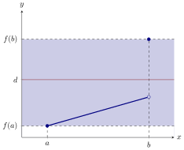

Here we see a consequence of a function being continuous.
The Intermediate Value Theorem should not be brushed off lightly. Once it is
understood, it may seem “obvious,” but mathematicians should not underestimate its
power.
Intermediate Value Theorem If is a continuous function for all in the closed interval
and is between and , then there is a number in such that .
Now, let’s contrast this with a time when the conclusion of the Intermediate Value
Theorem does not hold.
Consider the following situation,

and select all that are true:
is continuous on . is continuous on . is continuous on .
is continuous on . There is a point in with .
Building on the question above, it is not difficult to see that each of the hypothesis of
the Intermediate Value Theorem are necessary.
Let’s see the Intermediate Value Theorem in action.
Explain why the function has a root between and .
Since is a polynomial, we see that is continuous for all real numbers. Since and ,
and is between and , by the Intermediate Value Theorem, there is a point in the
interval such that .
This example also points the way to a simple method for approximating
roots.
Approximate a root of between and to within one decimal place.
Again, since is a polynomial, we see that is continuous for all real numbers.
Compute By the Intermediate Value Theorem, has a root between and . Repeating
the process so by the Intermediate Value Theorem, has a root between and , and
the root is rounded to one decimal place.
The Intermediate Value Theorem can be use to show that curves cross:
Explain why the functions
intersect on the interval .
To start, note that both and are continuous functions, and hence is also a
continuous function. Now
and in a similar fashion
Since and we see that the expression above is positive. Hence by the Intermediate
Value Theorem, and intersect on the interval .
Now we move on to a more subtle example:
Suppose you have two cats, Roxy and Yuri. Is there a time when Roxy and Yuri have
the same amount of water in their bowls assuming:
- They start and finish drinking at the same times.
- Roxy starts with more water than Yuri, and leaves less water left in her
bowl than Yuri.
To solve this problem, consider two functions:
- the amount of water in Roxy’s bowl at time .
- the amount of water in Yuri’s bowl at time .
Now if is the time the cats start drinking and is the time the cats finish
drinking. Then we have and Since the amount of water in a bowl at time is a
continuous function, as water is “lapped” up in continuous amounts, is a
continuous function, and hence the Intermediate Value Theorem applies. Since is
positive when at and negative at , there is some time when the value is
zero, meaning meaning there is the same amount of water in each of their
bowls.
And finally, an example when the Intermediate Value Theorem does not
apply.
Suppose you have two cats, Roxy and Yuri. Is there a time when Roxy and Yuri have
the same amount of dry cat food in their bowls assuming:
- They start and finish eating at the same times.
- Roxy starts with more food than Yuri, and leaves less food uneaten than
Yuri.
Here we could try the same approach as before, setting:
- the amount of dry cat food in Roxy’s bowl at time .
- the amount of dry cat food in Yuri’s bowl at time .
However in this case, the amount of food in a bowl at time is not a continuous
function! This is because dry cat food consists of discrete kibbles, and is not eaten in
a continuous fashion. Hence the Intermediate Value Theorem does not
apply, and we can make no definitive statements concerning the question
above.